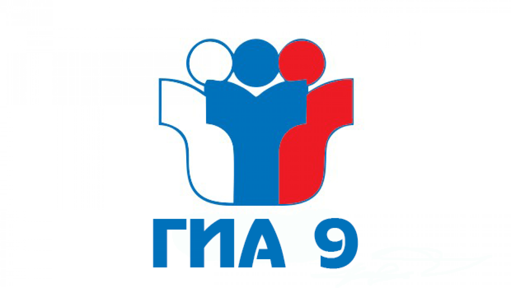
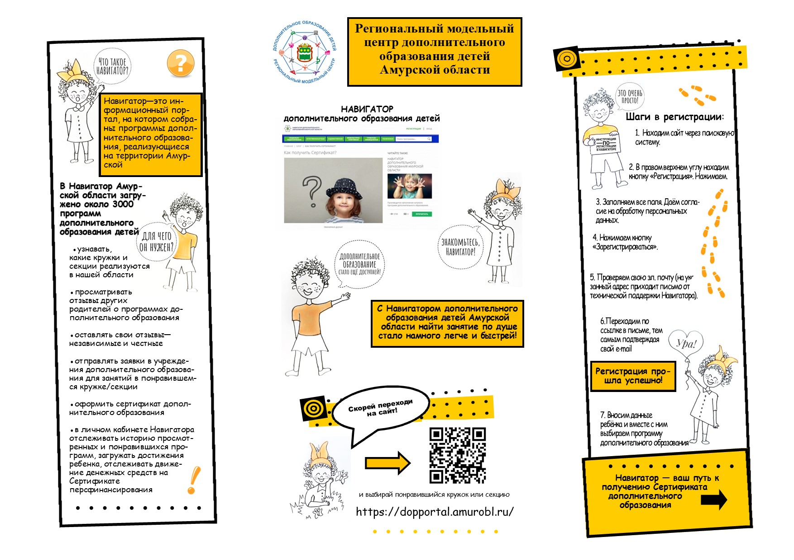

В сентябре 2020 года в Амурской области вводится система персонифицированного финансирования
дополнительного образования детей (ПФ ДОД).
В чем заключается система персонифицированного финансирования дополнительного образования
детей?
Ребенок вместе с родителями выбирает, где учиться. При этом система ПФ ДОД обеспечивает
равный и свободный выбор ребенком и его семьёй любой дополнительной общеразвивающей
программы, реализуемой на территории Амурской области, включенной в реестр образовательных
программ по персонифицированному финансированию и прошедшей независимую экспертизу качества.
Что для этого необходимо сделать родителям?
Зарегистрироваться на сайте Навигатора дополнительного образования детей Амурской области.
https://dopportal.amurobl.ru/

Навигатор – это интернет-портал, где родители или сами ребята ищут кружки и секции, а
учреждения дополнительного образования привлекают детей на свои занятия. Родители (законные
представители ребенка) как зарегистрированные пользователи смогут: просмотреть реестр
(перечень) общеразвивающих программ в разрезе каждого учреждения дополнительного образования
детей, осуществить поиск, просмотр информации о программе и ее организаторе, записать
ребенка на обучение
Далее в каталоге Навигатора родители выбирают занятия и записывают ребенка на обучение.
Детям, зачисленным на занятия, автоматически выдается электронный Сертификат учета или
Сертификат персонифицированного финансирования с определенной суммой денег. После чего
ребенок посещает занятия, оплата за обучение будет списываться со счета Сертификата (если
программа участвует в персонифицированном финансировании).
Что такое Сертификат персонифицированного финансирования?
Сертификат – это именной электронный документ, который позволяет ребенку обучаться
дополнительно, вне школы, за счет средств, выделенных государством. Все данные о Сертификате
– срок действия, остаток средств на счете, списания – будут находиться на сайте Навигатора
дополнительного образования детей Амурской области в Личном кабинете пользователей.
Средства, которые дает Сертификат, можно потратить только на дополнительное образование
детей и только через Портал дополнительного образования! Деньги нельзя потратить на другие
цели и нельзя обналичить. При этом в выборе занятий дети не ограничены. В настоящее время на
сайте возможно создание личного кабинета, знакомство с загруженными программами, получение
сертификата учета. Ведутся работы по подключению дополнительных модулей Навигатора по выдаче
сертификатов учета и сертификатов финансирования, проводится экспертиза программ
дополнительного образования.
Уважаемые родители!
После проведения процедуры регистрации на сайте нужно прийти в СОШ с. Украинка чтобы
активировать сертификат.
При себе иметь: паспорт, свидетельство о рождении и СНИЛС ребенка (на которого вписывается
сертификат).
В нашей школе работает две программы:
1. "Мастерская рукоделия" для учащихся 1-9 классов, руководитель Журавлёва Г.М.
2. "Пионербол" для учащихся 5-6 классов, руководитель Хотыныч А.Н.
